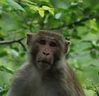

ISUD is a society of scholars, mostly philosophers, from many parts of the world, devoted to promoting international dialogue and the discussion of fundamental questions of universal concern, which affect all humanity, such as world peace, human rights, dialogical interrelations of diverse cultures, and preservation of the world ecology.
- What role does philosophical thinking have to play in moving toward a more rational and more humane future?
- What are ethical principles of dialogue?
- How may one understand cultural diversity and universality?
- How best to work toward a culture of peace?
- What is the relationship between the basic liberties of individuals and the collective rights of cultural groups?
Join us in the search for answers and more question. Become an active member with the ISUD. Email us HERE for more information.